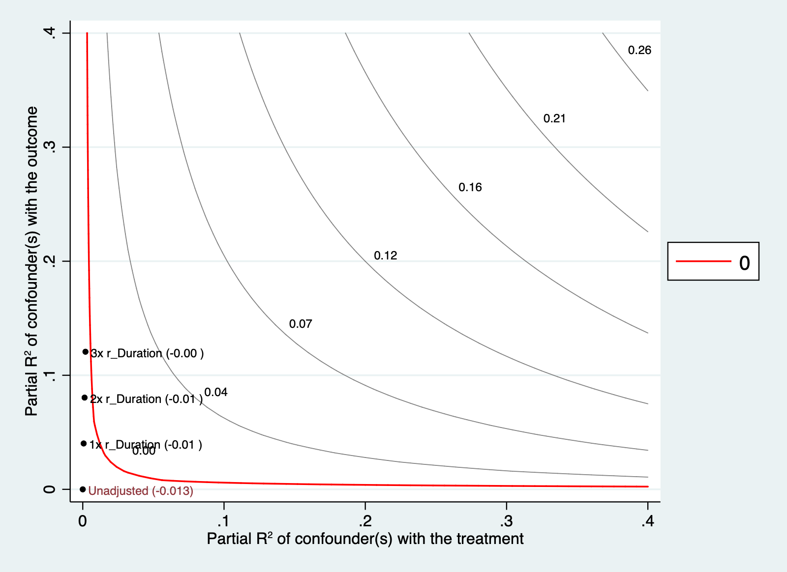
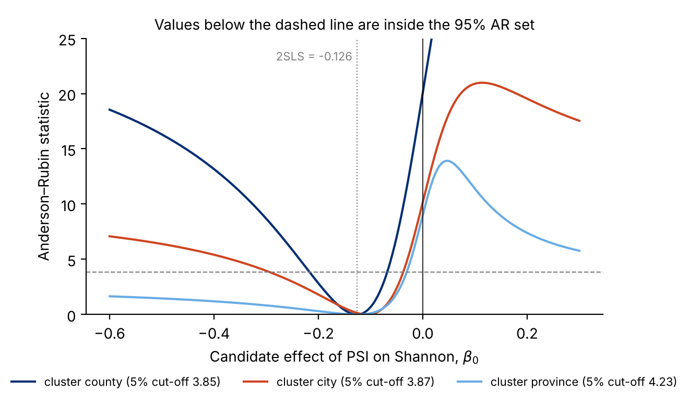
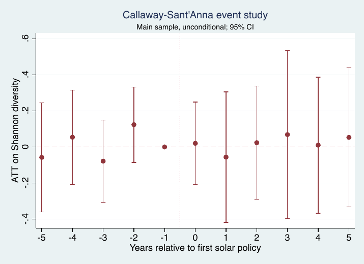
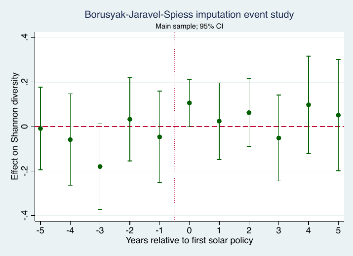

Does China's solar expansion policy reduce bird diversity?
A replication and evaluation of Zhang et al. (2026), “China's solar expansion policy reduces bird diversity”, Science 393, 831. Work by Sahil (research assistant) for Prof. Paul J. Ferraro, Johns Hopkins University. Every estimate on this page was produced in Stata from the authors' data and code.
Verdict at a glance
Each row is one piece of evidence. The last column says whether it supports the claim that solar policy harms birds.
| Evidence | What it shows | Supports harm? | |
|---|---|---|---|
| Paper's TWFE regression | −0.0125, significant | Yes | details |
| TWFE in fair comparisons | About −0.003, not significant | No | details |
| Birdwatching effort and missing months | PSI is linked to less observation, through the urban–rural split | Undermines | details |
| Sensitivity analysis | A weak confounder (2.2%) overturns the estimate | Fragile | details |
| Instrumental variable | Significant, but the exclusion restriction fails; corrected −0.042, not significant | Weak | details |
| Staggered DiD (binary adoption) | +0.02 to +0.08, not significant | No | details |
| dCDH (PSI as a dose) | −0.03 to −0.05; not significant with controls in fair samples; effort pre-trends fail | Partly | details |
| Solar-plant area | Negative in TWFE; disappears holding effort fixed; dCDH not significant | Unclear | details |
Questions answered
Questions raised in the project meetings, each with a direct answer. Type to filter.
Do the paper's results reproduce?
Yes. Running the authors' code with only file paths changed reproduces all 12 numbers we checked, to four decimals. The main estimate is −0.0125283 (county-clustered SE 0.0036551), with 46,371 county-months and 2,344 counties.
Why does the main estimate shrink in a “fair comparison”?
PSI is missing for 724 counties and the authors set it to 0. These are almost all urban districts: 694 of 847 urban districts, against 9 of 1,497 rural counties. So the regression mostly compares rural counties (with PSI) against urban districts (PSI = 0).
Urban and rural areas had very different trends in birdwatching. When urban is compared with urban and rural with rural, or when only counties with real PSI are used, the estimate is −0.0027 (p ≈ 0.5).
What exactly does “83% of urban county-months have imputed PSI” mean?
Of all urban county-months in the regression, 83.1% belong to counties whose PSI was missing and filled in as 0. For rural county-months the share is 1.2%. Urban rows are 52% of the sample.
The sample using only real PSI drops 20,364 rows, and 98.7% of those are urban. What remains is essentially a rural sample (15.8% urban).
Where does the paper analyze the number of birdwatchers, and why?
- Where: only inside the control variable Duration (log birding hours per birdwatcher). No table uses birdwatching as an outcome.
- What the variable is: in the authors' file, “number of birdwatchers” is a count of submitted records per county-month. One person submitting three outings counts three times. It measures checklists, not unique people.
- Table S14: the paper's effort check drops county-months with few records. It says it drops the bottom 20/10/5/3%, but it keeps only 17–58% of the sample.
Is there evidence that birding grew faster in cities?
Yes. On the full county × month grid, the share of months with any record grew 2.3 percentage points per year faster in urban districts than in rural counties. The log number of records grew 0.060 per year faster. Both p < 0.001.
Does PSI predict less birdwatching?
In the paper's design, yes: one more PSI point goes with 4.1% fewer records and a 0.55 percentage-point lower chance that a month is observed at all. In fair comparisons both links disappear. Holding ln(records) fixed, the PSI effect on Shannon is +0.003 (p = 0.31).
How little confounding would overturn the result?
A confounder explaining 2.16% of the leftover variation in both PSI and Shannon brings the estimate to zero. 1.24% makes it insignificant. A confounder three times as strong as Duration makes it insignificant, and four times brings it to zero. With urban × year-month effects, twice Duration is enough.
Why did the first sensitivity run “fail”, and how was it fixed?
The version with explicit county dummies needs 2,344 dummy variables. Stata/BE allows 2,048, so it stops with error r(907). The fix is residualization: remove the fixed effects from the outcome, the treatment and every control first, then run sensemakr on the residuals. This gives exactly the paper's coefficient (−0.0125283).
Is the instrument weak?
It depends on clustering. The instrument's F is 30.2 with county clusters (passes the 23.1 benchmark), 10.8 with city clusters and 2.8 with province clusters (both fail). The “F ≈ 8” in Table S10 is the joint F of all ten regressors, not the instrument's strength.
But weakness is not the main problem. Anderson–Rubin confidence sets, which stay valid with weak instruments, still exclude zero.
What is the plausibly-exogenous IV step, and is it valid?
Idea. IV assumes the instrument affects birds only through PSI. In the 724 counties where PSI is fixed at 0, the instrument cannot move PSI. If it still moves Shannon there, that is a direct effect.
Result. It does: −0.00214 (p = 0.048). Subtracting this direct effect (Conley, Hansen & Rossi 2012; van Kippersluis & Rietveld 2018) cuts the IV estimate from −0.126 to −0.042, which is not significant.
Is it valid? As a sensitivity check, yes. As a corrected estimate, no: the direct effect is measured in mostly urban counties and may differ elsewhere. It shows the IV conclusion depends on an assumption the data contradict.
Where does the solar-area data come from? Are zeros real? Is it missing for the same counties as PSI?
- Source: licensed power plants from the National Energy Administration. Area = installed capacity converted to km².
- True zeros: yes. The capacity file has 11,699 county-years with a real zero, so counties with no plants can be told apart from missing counties.
- Missing: 1,184 counties are missing from the capacity file and set to 0. Only 473 of them are also missing PSI. So it is a different and larger set, and missing data do not explain choosing PSI over Area.
Which staggered DiD estimators were run?
What do the de Chaisemartin & D'Haultfœuille estimators show?
A negative effect: −0.055 (SE 0.018) per PSI point, with Shannon pre-trend tests passing. It stays negative within urban/rural (−0.041) and in real-PSI counties (−0.037). With the paper's nine controls it is −0.024 to −0.029 and not significant in the fair samples. The pre-trend test on birdwatching records fails (p = 0.001).
Why do dCDH and the binary estimators disagree?
They estimate different things. The binary estimators measure the effect of adopting any policy for the first time, in counties untreated in 2014. dCDH measures the effect of more policy, and also uses later increases in the 838 counties already treated in 2014. That is where most PSI variation is.
Was the “no stayers” dCDH method (AEA P&P 2024) used?
No, because its design does not fit. It needs all units untreated at the start and one common adoption date. Here 838 counties already have PSI > 0 in 2014, PSI changes in different years, and about 74% of year-to-year steps are “stayers”. The stayers-based estimator (did_multiplegt_stat) was used instead.
What could not be run, and why?
did_multiplegt_dynwithcontrols(): stops in Stata/BE (variable limit). Replaced by a covariate-adjusted outcome.continuous(1)with bootstrap: ran over 12 minutes without finishing.- Explicit-dummy sensitivity: exceeds the 2,048-variable limit. Replaced by residualization.
All three can be run in Stata/MP or R.
Can everything be run from one file?
Yes: run_everything.do. See Code and reports.
1. The paper and its data
- Unit: county-month, 2014–2023.
- Outcome: Shannon diversity of birds recorded on China Birdreport, a citizen-science platform. These are opportunistic records, not standardized surveys.
- Treatment (PSI): policy documents promoting solar, scored by how binding they are and summed per county-year (0 to 15.5). Missing for 724 of 2,501 counties and set to 0.
- Controls: temperature, wind, population density, carbon emissions, four land-use shares, and Duration (log hours per birdwatcher).
- Very unbalanced panel: the median county is observed in 11 of 120 months. Observed rows are about 14% of all possible county-months.
Sample flow
| Step | County-months | Counties |
|---|---|---|
| Possible (2,778 counties × 120 months) | 333,360 | 2,778 |
| At least one bird record | 48,900 | 2,561 |
| No missing control | 46,528 | 2,501 |
| Regression sample (one-row counties dropped) | 46,371 | 2,344 |
| IV sample | 37,503 | 2,077 |
Four different questions
The methods on this page do not all estimate the same quantity, so their numbers need not match.
- TWFE (paper): change in Shannon per PSI point within counties, relative to common monthly shocks.
- IV: effect per PSI point for counties whose policy responds to the instrument.
- Binary staggered DiD: effect of adopting any solar policy for the first time.
- dCDH: effect per PSI point of the changes counties actually experienced, against counties at the same starting PSI that did not change.
2. The main estimate
It reproduces exactly. It does not survive a fair comparison.
| Specification | PSI effect | SE | p |
|---|---|---|---|
| Paper: county + year-month fixed effects | −0.0125 | 0.0037 | <0.001 |
| Urban × year-month fixed effects | −0.0027 | 0.0037 | 0.47 |
| Only counties with real PSI data | −0.0027 | 0.0038 | 0.49 |
| Province × year-month fixed effects | −0.0146 | ||
| Cumulative PSI (policy stock) | −0.0012 | 0.58 | |
| Matching, with the matching weights applied | about −0.005 | n.s. |
- Who is missing. The 724 counties with PSI set to 0 are almost all urban districts.
- What that does. The regression compares rural counties with PSI against urban districts with PSI = 0.
- Why it is unfair. Birdwatching grew much faster in cities. Rural counties then look “worse” over time, and PSI picks that up.
- The checks. Giving urban and rural areas their own monthly shocks, or dropping the filled-in zeros, removes about 80% of the effect.
3. Is the outcome measuring birds or birdwatching?
Shannon rises with effort: more observers and more hours find more species. If high-PSI places are observed less, they look less diverse even with the same birds.
Does PSI change effort?
| Effect of +1 PSI point on | Paper design | Urban × month FE | Real-PSI only |
|---|---|---|---|
| ln(number of birdwatcher records) | −0.041*** | −0.014** | −0.008 |
| ln(1 + total birding hours) | −0.057*** | −0.020*** | −0.011 |
| Chance a county-month is observed at all | −0.0055*** | +0.0001 | +0.0002 |
Holding ln(records) fixed, the PSI effect on Shannon is +0.003 (p = 0.31).

- In the paper's design, PSI predicts less effort and fewer observed months.
- Both links disappear in fair comparisons. So the same urban–rural split drives the main estimate, the effort gap and the missing months.
- Holding effort fixed is a diagnostic, not a fix. If birds leave, birdwatchers may follow (a “bad control”). But the paper does not examine effort at all.
4. Solar-plant area as the treatment
PSI measures documents. Birds respond to land. So we also used the land area of centralized solar plants (km²).
| Specification (outcome: Shannon unless stated) | Effect of +1 km² | p |
|---|---|---|
| Paper (Table S12, column 1) | −0.0387 | 0.001 |
| Urban × year-month FE | −0.0298 | 0.007 |
| Province × year-month FE | −0.0251 | 0.036 |
| Real-PSI counties | −0.0304 | 0.027 |
| Counties in the capacity file only | −0.0225 | 0.066 |
| Holding ln(birdwatcher records) fixed | −0.0055 | 0.62 |
| Outcome: ln(birdwatcher records) | −0.0843 | <0.001 |
| dCDH, all counties | −0.106 (SE 0.068) | n.s. |
| dCDH, capacity-file counties | −0.053 (SE 0.078) | n.s. |

- For the paper: Area stays negative in the comparison-group checks where PSI does not. This is the strongest support for the paper's story.
- Against: more solar area goes with 8.4% fewer records per km², and holding records fixed removes 85% of the effect.
- Species counts fall but evenness does not. Shorter species lists are what fewer observers produce.
- dCDH with Area finds nothing significant.
- Within a county over time, PSI is negatively related to solar area. The paper's positive correlation (r = 0.041) comes from comparing different counties.
5. Sensitivity to an omitted confounder
The Cinelli–Hazlett method asks: how strong would a hidden confounder need to be to change the conclusion?
| Paper design | Urban × month FE | |
|---|---|---|
| Estimate | −0.0125 | −0.0027 |
| Robustness value (brings estimate to 0) | 2.16% | 0.44% |
| Robustness value (makes it insignificant) | 1.24% | already n.s. |
| Estimate if a confounder is k times as strong as Duration | ||
| k = 1 | −0.0096 | −0.0014 |
| k = 2 | −0.0067 | −0.0002 |
| k = 3 | −0.0038 (n.s.) | +0.0010 |
| k = 4 | −0.0009 | +0.0023 |
| k = 5 | +0.0020 | +0.0035 |


- An omitted variable explaining just over 2% of the leftover variation in both PSI and Shannon would wipe out the effect.
- Duration, the paper's effort control, explains 4% of Shannon's leftover variation. Three times that makes the estimate insignificant.
- The obvious candidate is the part of birding effort that hours-per-birdwatcher does not capture: where people go and how many go.
6. The instrumental variable
Instrument: ln(long-run sunshine) ÷ city climate-policy uncertainty. The paper's IV estimate is −0.126, ten times its main estimate.
Strength
| Clustering | Instrument F | Benchmark 23.1 | 95% Anderson–Rubin set |
|---|---|---|---|
| County (paper) | 30.2 | passes | [−0.217, −0.069] |
| City | 10.8 | fails | [−0.295, −0.038] |
| Province | 2.8 | fails | (−∞, −0.030] ∪ [0.590, ∞) |

Exclusion restriction
In the 724 counties with PSI fixed at 0, the instrument cannot move PSI. It still lowers Shannon there: −0.00214 (p = 0.048).
| Assumed direct effect of the instrument | IV estimate | 95% AR set |
|---|---|---|
| 0 (the paper's assumption) | −0.126 | [−0.217, −0.068] |
| −0.00214 (estimated) | −0.042 | [−0.105, +0.014] |
| −0.00425 (lower end of its 95% CI) | +0.042 | [−0.013, +0.114] |
- Weakness is not the problem. Anderson–Rubin sets do not depend on instrument strength and still exclude zero.
- Exclusion is. City policy uncertainty plausibly affects birds or birding in other ways: other environmental policy, land use, the local economy.
- The measured direct effect is two-thirds of the reduced form. Removing it leaves an estimate a third of the size and not significant.
- Caveat. The direct effect is measured in mostly urban counties. Treat this as a sensitivity check, not a corrected estimate.
- Data detail. The sunshine variable's label says 1994–2023, not the 1984–2013 stated in the paper. If so, it overlaps the study period.
7. Staggered difference-in-differences (binary adoption)
When treatment starts at different times, plain TWFE uses already-treated counties as controls. Modern estimators avoid that.
| Estimator | Main sample (real PSI) | Paper-style (missing PSI = never treated) |
|---|---|---|
| TWFE, same binary treatment | +0.032 | |
| Callaway & Sant'Anna | +0.057 (n.s.) | −0.091 |
| Borusyak, Jaravel & Spiess | +0.078 (n.s.) | −0.087 (pre-period −0.173) |
| Sun & Abraham | +0.024 (n.s.) |


- In the main sample, none of the three finds harm.
- Negative estimates appear only when the filled-in urban counties serve as “never treated” controls. Then there is a large gap the year before adoption, so parallel trends fail.
- Limits. These estimators turn PSI into 0/1, drop the 838 counties already treated in 2014, and ignore that PSI falls back to 0 in about 15% of later years.
8. de Chaisemartin & D'Haultfœuille: PSI as a dose
dCDH compares each county whose PSI changes with counties that started at the same PSI and have not changed yet. It keeps the full dose and uses every change.
| Specification | Effect per PSI point (SE) | Pre-trend test |
|---|---|---|
| did_multiplegt_dyn (event study) | ||
| All counties | −0.055 (0.018)*** | passes (p = 0.74) |
| Within urban / within rural | −0.041 (0.019)** | passes |
| Real-PSI counties | −0.037 (0.019)** | passes |
| All counties, adjusted for the 9 controls | −0.041 (0.018)** | passes |
| Real-PSI, adjusted for controls | −0.025 (0.019) | passes |
| Within urban/rural, adjusted for controls | −0.029 (0.018) | passes |
| did_multiplegt_stat (weighted average slope) | ||
| All counties | −0.035 (0.016)** | passes |
| Real-PSI counties | −0.027 (0.013)** | passes |
| All counties, with the 9 controls | −0.024 (0.015) | passes |
| Outcome: ln(birdwatcher records) | ||
| dyn, all counties | −0.019 (0.010) | fails (p = 0.001) |
| dyn, real-PSI counties | +0.006 (0.011) | fails (p = 0.001) |
| Benchmark: TWFE on the same county-year panel | ||
| All counties / real-PSI | −0.009** / −0.003 | |

- For the paper. When a county's PSI rises, its recorded diversity falls relative to similar counties, and the Shannon pre-trend tests pass. This is the most supportive result in our analysis.
- Against. With the paper's controls the estimate is −0.024 to −0.029 and not significant in the real-PSI, within-urban/rural or full-controls versions.
- Effort pre-trends fail. Before their PSI rose, these counties' birding activity was growing faster than in comparison counties. So part of the Shannon change may again reflect observation.
Which dCDH method fits these data
| Command | Design it needs | Used? |
|---|---|---|
did_multiplegt_dyn | Treatment can be non-binary, start at different times, and move up or down | Yes |
did_multiplegt_stat | Some units keep the same treatment between consecutive periods (“stayers”) | Yes. About 74% of county-years are stayers |
did_had (no stayers) | All units untreated at first, then all treated at one date | No. 838 counties are already treated in 2014 and timing varies |
Conclusion and limitations
- The reported effect depends on three things: comparing rural counties with urban districts whose policy data are missing; an outcome built from opportunistic records whose volume is related to the treatment; and an instrument with a measurable direct effect.
- The most favourable modern estimator (dCDH) finds a negative effect. It loses significance with the paper's controls in comparable samples, and its effort pre-trend test fails.
- The evidence is insufficient to conclude that China's solar expansion policy reduced bird diversity. It is also not evidence of no effect.
Limitations of this evaluation
- We rely on the authors' data files. How some were built (the Table S14 samples, the sunshine period) could not be verified.
- “Holding birdwatchers fixed” is a diagnostic, not a solution.
- Stata/BE limits prevented three specifications (see Questions answered).
What would settle it
- A test where observation effort is fixed by design, such as China BON-Birds fixed transects.
- dCDH with controls and the continuous option in Stata/MP or R, with bounds for the effort pre-trends.
- Inverse-probability weighting for observed months, using the full county × month grid.
- Asking the authors about the Table S14 samples, the sunshine period, and why PSI rather than Area is the main treatment.
Code and reports
Full report (PDF)dCDH report (PDF)Browse the Stata code
One file runs everything. Set the folder path in 00_config.do first.
do "YOUR_PATH/Solar_Birds_Replication/run_everything.do"
| Folder | Files | What it does |
|---|---|---|
01_Task1_Replication | 1_2 to 1_6 | Sample build, reproduction check, TWFE diagnostics, IV exclusion tests |
02_Task2_Sensitivity | 2_1 | Cinelli–Hazlett sensitivity analysis |
03_Task3_Staggered_DiD | 3_1 to 3_5 | Adoption timing, TWFE event study, Callaway–Sant'Anna, BJS, Sun–Abraham |
05_Followups_Nov13 | 5_1 to 5_6 | Effort test, sample flow, missingness grid, solar area, weak-IV and Anderson–Rubin |
06_Followups_Nov19 | 6_1 to 6_4 | Residualized sensitivity, dCDH (dyn and stat), data facts, covariate-adjusted dCDH, dCDH with Area, urban growth |
The authors' data and original code are not redistributed here. They are available from the paper's replication package. Stata packages used: reghdfe, ivreghdfe, sensemakr, csdid, did_imputation, eventstudyinteract, did_multiplegt_dyn, did_multiplegt_stat, gtools.
Glossary
A diversity score. It is higher when more species are recorded and when records are spread evenly across them.
Policy Stringency Index. A score of how many, and how binding, solar-promotion documents a county has in a year.
Two-way fixed effects. A regression that compares each county with itself over time, net of shocks common to all counties in a month.
Separate baselines for each county and each time period, so only changes within a county over time are used.
PSI that was missing in the policy files and filled in as 0 by the authors.
Something that affects both the policy and the outcome, creating a link that is not causal.
How strong a hidden confounder must be, as a share of leftover variation, to bring the estimate to zero.
A variable that shifts the treatment but should affect the outcome only through it. Used to isolate causal variation.
The assumption that the instrument has no direct effect on the outcome.
A confidence interval for an IV estimate that stays valid when the instrument is weak.
Difference-in-differences when units start treatment at different times.
Checks whether treated and comparison units were already moving apart before treatment. If they were, the comparison is suspect.
Units whose treatment stays the same, and units whose treatment changes, between two periods.
Not statistically significant at the 5% level. Stars: ** p < 0.05, *** p < 0.01.
Source paper: Zhang et al. (2026), “China's solar expansion policy reduces bird diversity”, Science 393, 831. This page is an independent replication and evaluation; it is not affiliated with the paper's authors or the journal.